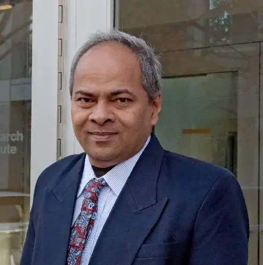

Dr. Dhananjay Kumar
Professor and Head, Department of Information Technology
Madras Institute of Technology Campus
Anna University, Chennai
Information technology, one of the fastest growing technologies, has become a strategic function in every organization and lands its foot in every walk of our life. The department of Information Technology established in the year 2000, offers under graduate and post graduate programmes in Information Technology, with the curriculum been devised and periodically being revised with the possibility of exploring different forms of knowledge through theoretical, practical and productive means as stated by the great philosopher Aristotle.
The department considers the committed and dedicated faculty as its core strength in providing value education with professional standards to the enthusiastic and vibrant student community. Improved methods of teaching and learning process are adopted to achieve learning abilities through practice, exposure and motivation. Department has good infrastructural and computing facilities and provides a conducive environment to promote academic and research excellence in the department by successfully procuring and executing funded research projects.
The department of Information Technology has received funding from the Department of Science and Technology under FIST (Fund for Improvement of Science and Technology) scheme for setting up wireless sensor network and cloud computing labs. The department has also received fund from UGC-DRS-SAP( Department Research Support for Special Assistance Programme) to carry out the research projects in Pervasive Computing.
The department endeavors to continually improve, for standing ever competent in producing information technologists in the real sense, through committed and well defined function processes in the department.